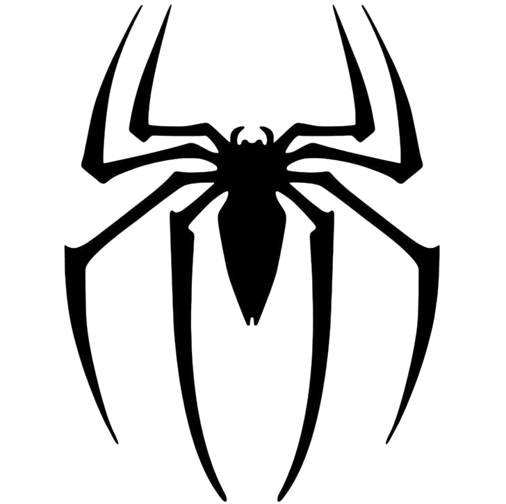

cofee do homem aranha
receita de mini donuts
ingetientes
- 1 caixa de leite condensado
- 1 colher (sopa) de margarina sem sal
- 7 colheres (sopa) de achocolatado ou 4 colheres (sopa) de chocolate em pó
- chocolate granulado
Modo de preparo
- Em uma panela funda, acrescente o leite condensado, a margarina e o chocolate em pó.
- Cozinhe em fogo médio e mexa até que o brigadeiro comece a desgrudar da panela.
- Deixe esfriar e faça pequenas bolas com a mão passando a massa no chocolate granulado
- Depois enfeite com perninha de chocolate e olhinhos como se fosse uma aranha